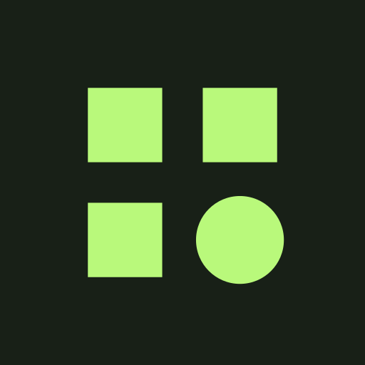
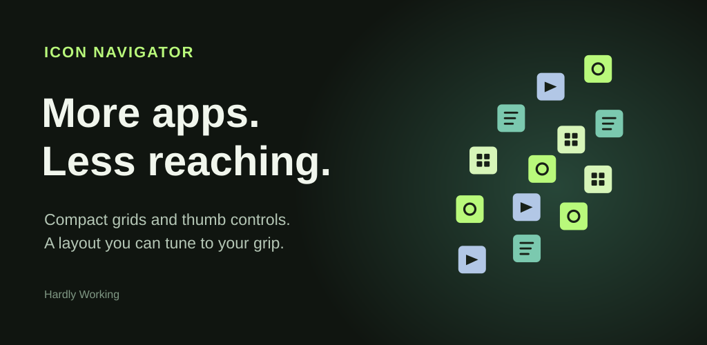

Icon Navigator
More apps in less space. Keep frequent apps close to your chosen corner.
Compare 9, 12, and 16 apps in a compact Grid, or place a Thumb selector low on the screen.
Make it yours with optional labels, light or dark backgrounds, gradients, grayscale icons, borders, opacity, and independent layer sizes.
Eight real app and launcher captures · version 0.6.4 · 1080 × 1920 · RGB PNG.
Original packaged AOSP and Fossify icons, styled using the app’s own visual options. No phone artwork or imported icon images.

1024 × 500 feature graphic · original vector artwork
Phone screenshots